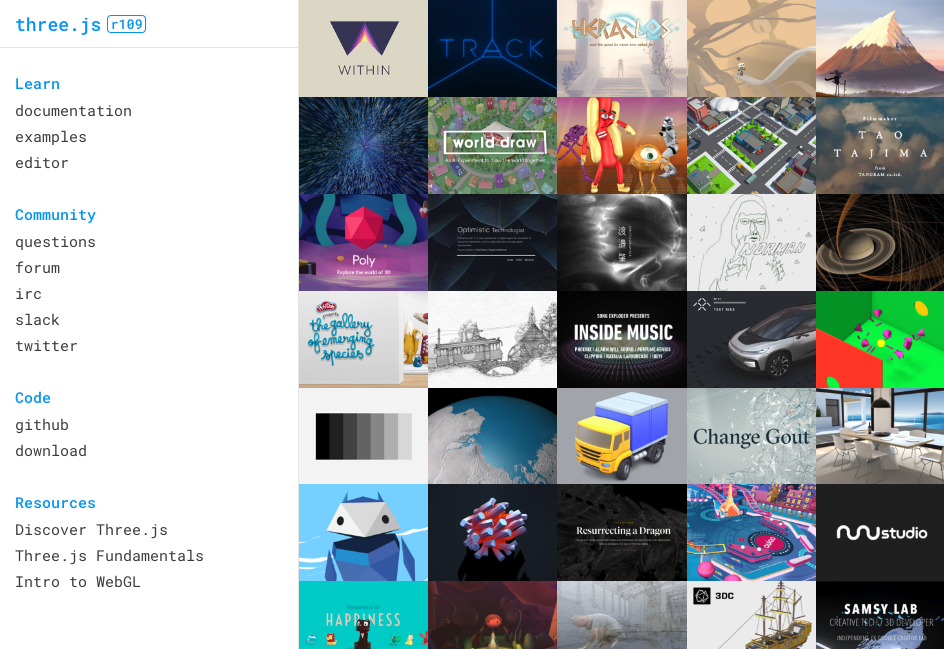

<!DOCTYPE html>
<html lang="en">
  <head>
    <meta charset="utf-8" />
    <meta name="viewport" content="width=device-width, initial-scale=1.0, maximum-scale=1.0, user-scalable=no" />

    <title>European Developer Summit 2019: ArcGIS API for JavaScript Presentations</title>
    <meta property="og:title" content="European Developer Summit 2019: ArcGIS API for JavaScript Presentations" />
    <meta property="og:type" content="website" />
    <meta property="og:image" content="https://jsapi.dev/2019-11-devsummit-eu-presentations/featured-slide.jpg" />
    <meta property="og:url" content="https://jsapi.dev/2019-11-devsummit-eu-presentations" />
    <meta name="description" content="European Developer Summit 2019: ArcGIS API for JavaScript Presentations">
    <meta property="og:description" content="European Developer Summit 2019: ArcGIS API for JavaScript Presentations">
    <link rel="stylesheet" href="./css/reveal.css" />
    <link rel="stylesheet" href="./css/theme/black.css" id="theme" />
    <!-- <link rel="stylesheet" href="./css/highlight/railscasts.css" /> -->
    <link rel="stylesheet" href="./css/print/paper.css" type="text/css" media="print" />
    <link rel="stylesheet" href="./assets/style.css" />

    <script src="https://cdnjs.cloudflare.com/ajax/libs/animejs/2.0.2/anime.min.js"></script>
  </head>
  <body>
    <div class="reveal">
      <div class="slides"><section  data-markdown><script type="text/template"><!-- .slide: data-background="images/bg-1.png" data-title="add-scene-layer" class="title" -->

# <span style="font-size: 0.8em;">ArcGIS API for JavaScript</span><br>Using Animations


Yannik Messerli, Esri R&D Center Zürich \
Arno Fiva, Esri R&D Center Zürich

ESRI EUROPEAN DEVELOPER SUMMIT​


</script></section><section  data-markdown><script type="text/template">
<!-- .slide: data-background="images/bg-4.png" data-title="add-scene-layer" data-state="slide-animation-title" data-transition="zoom-in slide-out" -->

<h1 id="animation" style="font-size: 500%;">Animation</h1>

<span id="letters">Successive</span> drawings to create an illusion of movement.
</script></section><section  data-markdown><script type="text/template">
<!-- .slide: data-background="images/bg-2.png" data-title="add-scene-layer" data-transition="fade" -->

<div style="font-size: 1.8em; font-weight: bold; text-align: left; margin-left:25%;">
<p style="opacity: 0.8; font-weight: normal;"><span style="font-weight: lighter;opacity: 0.5;">Animate</span> UI elements</p>
<p><span style="font-weight: lighter;opacity: 0.5;">Animate the</span> Camera</p>
<p><span style="font-weight: lighter;opacity: 0.5;">Animate</span> Scene's elements
    <ul style="font-size: 0.7em;">
    <li class="fragment fade-in">Visual properties <em style="opacity: 0.8; font-weight: normal;font-size: 80%;">(colors, positions, ...)</em></li>
    <li class="fragment fade-in">3D environment properties</li>
    <li class="fragment fade-in">3D geometries</small></li>
    <li class="fragment fade-in" style="opacity: 0.8; font-weight: normal;">3D texture</li>
</ul>
</p>
</div>
</script></section><section  data-markdown><script type="text/template">

<!-- .slide: data-background="images/bg-3.png" data-title="add-scene-layer" -->

### Agenda

1. Built-in API Capabilities
2. Custom Animations
  * Pure Javascript's Techniques
  * Animation Libraries
  * Line Animations
  * Smooth Lines
3. External Renderer
</script></section><section  data-markdown><script type="text/template">
<!-- .slide: data-background="images/bg-3.png" data-title="add-scene-layer" -->

<h1 style="font-size: 500%;border: 5px solid white; border-radius: 100%;     width: 220px;height: 100px;padding-bottom: 120px; margin: auto; margin-bottom: 50px; box-shadow:1px 1px 1px #919191, 1px 2px 1px #919191, 1px 3px 1px #919191, 1px 4px 1px #919191, 1px 5px 1px #919191, 1px 6px 1px #919191, 1px 7px 1px #919191, 1px 8px 1px #919191, 1px 9px 1px #919191, 1px 10px 1px #919191, 1px 18px 6px rgba(16,16,16,0.4), 1px 22px 10px rgba(16,16,16,0.2), 1px 25px 35px rgba(16,16,16,0.2), 1px 30px 60px rgba(16,16,16,0.4);background: radial-gradient(circle, rgba(0,0,0,0) 50%, rgba(0,0,0,1) 100%);" class="letter3d number appear">1</h1>

<h1 id="built-in-api-capabilities" style="text-shadow: 2px 5px 15px rgba(0,0,0,0.5);">Built-in API capabilities</h1>
</script></section><section  data-markdown><script type="text/template">
<!-- .slide: data-background="images/bg-2.png" data-title="add-scene-layer" data-transition="fade"-->

<div style="font-size: 300%; margin-top: -302px;">
<span class="big-code" style="margin-left: -307px;">view.goTo(</span><span class="big-code">)</span>
</div>
</script></section><section  data-markdown><script type="text/template">
<!-- .slide: data-background="images/bg-2.png" data-title="add-scene-layer" data-transition="fade"-->

<div style="font-size: 300%;">
<span class="big-code">view.goTo(</span><code style="font-size: 100%;">target</code><span class="big-code">)</span>
</div>
<div style="position: absolute; font-size: 200%;">
    <code style="font-size: 100%;" class="fragment">[lon, lat]</code><br>
    <code style="font-size: 100%;" class="fragment">Camera</code><br>
    <code style="font-size: 100%;" class="fragment">Geometry</code><br>
    <code style="font-size: 100%;" class="fragment">Graphic</code><br>
    <span class="fragment"><code style="font-size: 100%;">scale</code>, <code style="font-size: 100%;">center</code>, <code style="font-size: 100%;">position (camera)</code>, <code style="font-size: 100%;">heading</code> or <code style="font-size: 100%;">tilt</code></span>

</div>
</script></section><section  data-markdown><script type="text/template">
<!-- .slide: data-background="images/bg-2.png" data-title="add-scene-layer" data-transition="fade-in zoom-out"-->

<div style="font-size: 300%;margin-left: -120px;">
<span class="big-code">view.goTo(</span><code style="font-size: 100%;">target</code><span class="big-code">).then(...)</span>
</div>
<div style="position: absolute; font-size: 200%; opacity: 0.5;">
    <code style="font-size: 100%;">[lon, lat]</code><br>
    <code style="font-size: 100%;">Camera</code><br>
    <code style="font-size: 100%;">Geometry</code><br>
    <code style="font-size: 100%;">Graphic</code><br>
    <span><code style="font-size: 100%;">scale</code>, <code style="font-size: 100%;">center</code>, <code style="font-size: 100%;">position (camera)</code>, <code style="font-size: 100%;">heading</code> or <code style="font-size: 100%;">tilt</code></span>

</div>
</script></section><section  data-markdown><script type="text/template">
<!-- .slide: data-background="images/bg-3.png" data-title="add-scene-layer" data-transition="fade-in"-->

## Promise

<div class="code-snippet" style="font-size: 300%;">
      <pre><code class="lang-ts hljs typescript" style="padding: 20px;width: 100%;">
Promise.then(function (data) {
    // when it goes well...
}, function (error) {
    // when it is rejected...
});
</code></pre></div>
</script></section><section  data-markdown><script type="text/template">
<!-- .slide: data-background="images/bg-3.png" data-title="add-scene-layer" -->

## [`SceneView.goTo`](https://developers.arcgis.com/javascript/beta/api-reference/esri-views-SceneView.html#goTo) &mdash; `heading`/`tilt`

<div class="twos">
  <div class="snippets">
    <div class="code-snippet">
      <pre><code class="lang-ts hljs typescript" style="padding: 20px;width: 100%;">
const currentHeading = view.camera.heading;
// Set the heading of the view to
// the closest multiple of 30 degrees
const heading = Math.floor((currentHeading + 1) / 30) * 30 + 30;
// go to heading preserves view.center
view.goTo({
  heading
});
        </code>
    </pre>
      <svg data-play-frame="frame-go-to-heading-tilt" class="play-code" data-play-argument="heading" viewBox="0 0 24 24"><path fill="#999" d="M12,20.14C7.59,20.14 4,16.55 4,12.14C4,7.73 7.59,4.14 12,4.14C16.41,4.14 20,7.73 20,12.14C20,16.55 16.41,20.14 12,20.14M12,2.14A10,10 0 0,0 2,12.14A10,10 0 0,0 12,22.14A10,10 0 0,0 22,12.14C22,6.61 17.5,2.14 12,2.14M10,16.64L16,12.14L10,7.64V16.64Z" /></svg>
    </div>
    <div class="code-snippet">
      <pre><code class="lang-ts hljs typescript" style="padding: 20px;">
const currentTilt = view.camera.tilt;
// Cycle tilt of the view in 15 degree increments
const tilt = (Math.floor((currentTilt + 1) / 15) * 15 + 15) % 90;
// go to tilt preserves view.center
view.goTo({
  tilt
});</code></pre>
      <svg data-play-frame="frame-go-to-heading-tilt" class="play-code" data-play-argument="tilt" viewBox="0 0 24 24"><path fill="#999" d="M12,20.14C7.59,20.14 4,16.55 4,12.14C4,7.73 7.59,4.14 12,4.14C16.41,4.14 20,7.73 20,12.14C20,16.55 16.41,20.14 12,20.14M12,2.14A10,10 0 0,0 2,12.14A10,10 0 0,0 12,22.14A10,10 0 0,0 22,12.14C22,6.61 17.5,2.14 12,2.14M10,16.64L16,12.14L10,7.64V16.64Z" /></svg>
    </div>
  </div>

  <div class="snippet-preview">
    <iframe id="frame-go-to-heading-tilt" data-src="./samples/using-animations/04-go-to-heading-tilt.html" style="overflow: hidden;padding: 0; min-width: 400px;" frameborder="0"></iframe>
  </div>
</div>
</script></section><section  data-markdown><script type="text/template">
<!-- .slide: data-background="images/bg-3.png" data-title="add-scene-layer" -->

## [`SceneView.goTo`](https://developers.arcgis.com/javascript/beta/api-reference/esri-views-SceneView.html#goTo) &mdash; Options


<div class="code-snippet" style="font-size: 150%;">
      <pre><code class="lang-ts hljs typescript" style="padding: 20px;width: 100%;">
view.goTo(target, {
  // Animate transition to the new view
  animate: boolean = true,
  // Speed of the animation
  speedFactor: Number = 1,
  // Set the exact duration  (in milliseconds)
  duration: Number = undefined,
  // The maximum allowed duration (in milliseconds)
  maxDuration: Number = 8000,
  // Function defining the speed of animation
  easing: String | Function = "out-expo" || "in-out-coast-quadratic"
});
      </code></pre>
</div>

</script></section><section  data-markdown><script type="text/template">
<!-- .slide: data-background-iframe="./samples/using-animations/03-water.html"-->

<h2 id="watersymbol3dlayer"><span onclick="document.querySelector('.slide-background.present iframe').contentWindow.postMessage({ play: true, slide: true }, '*');"><code>WaterSymbol3DLayer</code></a></h2>

<div class="fragment" id="menu">
  <p>Wave direction</p>
    <input
      type="range"
      name="waveDirection"
      value="50"
      min="0"
      max="360"
      id="direction"
      onchange="document.querySelector('.slide-background.present iframe').contentWindow.postMessage({ play: true, direction: this.value }, '*');"
    />
    <p>Wave strength</p>
    <div style="text-align: left; margin-left: 100px; font-size: 0.8em;">
      <input
        type="radio"
        name="waveStrengthRadio"
        value="calm"
        id="calm"
        onchange="document.querySelector('.slide-background.present iframe').contentWindow.postMessage({ play: true, strength: this.value }, '*');"
      /><label for="calm">Calm</label><br />
      <input
        type="radio"
        name="waveStrengthRadio"
        value="rippled"
        id="rippled"
        onchange="document.querySelector('.slide-background.present iframe').contentWindow.postMessage({ play: true, strength: this.value }, '*');"
      /><label for="rippled">Rippled</label><br />
      <input
        type="radio"
        name="waveStrengthRadio"
        value="slight"
        id="slight"
        onchange="document.querySelector('.slide-background.present iframe').contentWindow.postMessage({ play: true, strength: this.value }, '*');"
      /><label for="slight">Slight</label><br />
      <input
        type="radio"
        name="waveStrengthRadio"
        value="moderate"
        id="moderate"
        onchange="document.querySelector('.slide-background.present iframe').contentWindow.postMessage({ play: true, strength: this.value }, '*');"
        checked
      /><label for="moderate">Moderate</label><br />
    </div>
    <p>Dominant color</p>
    <button id="navy" class="color-btn" onclick="document.querySelector('.slide-background.present iframe').contentWindow.postMessage({ play: true, color: '#25427c' }, '*');"></button>
    <button id="green" class="color-btn" onclick="document.querySelector('.slide-background.present iframe').contentWindow.postMessage({ play: true, color: '#039962' }, '*');"></button>
    <button id="turqoise" class="color-btn" onclick="document.querySelector('.slide-background.present iframe').contentWindow.postMessage({ play: true, color: '#a2f9f5' }, '*');"></button>
</div>
</script></section><section  data-markdown><script type="text/template">
<!-- .slide: data-background="images/bg-3.png" data-title="add-scene-layer" -->

<h1 style="font-size: 500%;border: 5px solid white; border-radius: 100%;     width: 220px;height: 100px;padding-bottom: 120px; margin: auto; margin-bottom: 50px; box-shadow:1px 1px 1px #919191, 1px 2px 1px #919191, 1px 3px 1px #919191, 1px 4px 1px #919191, 1px 5px 1px #919191, 1px 6px 1px #919191, 1px 7px 1px #919191, 1px 8px 1px #919191, 1px 9px 1px #919191, 1px 10px 1px #919191, 1px 18px 6px rgba(16,16,16,0.4), 1px 22px 10px rgba(16,16,16,0.2), 1px 25px 35px rgba(16,16,16,0.2), 1px 30px 60px rgba(16,16,16,0.4);background: radial-gradient(circle, rgba(0,0,0,0) 50%, rgba(0,0,0,1) 100%);" class="letter3d number appear">2</h1>

<h1 id="custom-animation" style="text-shadow: 2px 5px 15px rgba(0,0,0,0.5);">Custom animation</h1>
</script></section><section  data-markdown><script type="text/template">
<!-- .slide: data-background="images/bg-3.png" data-title="add-scene-layer" -->

In this section, the idea is to...

### Update _some_ parameters at a defined time steps

using pure Javascript or libraries.
</script></section><section  data-markdown><script type="text/template">
<!-- .slide: data-background="images/bg-3.png" data-title="add-scene-layer" -->

### Agenda

<ol>
  <li style="opacity: 0.3;">Built-in API Capabilities</li>
  <li>Custom Animations
  <ul>
    <li>Pure Javascript's Techniques</li>
    <li style="opacity: 0.3;">Animation Libraries</li>
    <li style="opacity: 0.3;">Line Animations</li>
    <li style="opacity: 0.3;">Smooth Lines</li>
  </ul>
  </li>
  <li style="opacity: 0.3;">External Renderer</li>
</ol>
</script></section><section  data-markdown><script type="text/template">
<!-- .slide: data-background="images/bg-3.png" data-title="add-scene-layer" -->

<div class="twos">
    <div>
        Change Daylight - One step <br><br>
        <div class="code-snippet" style="max-width: 600px; font-size: 130%;float: none;">
            <pre>
            <code style="padding: 50px;" class="lang-js">
    const now = new Date();
    <br>
    function nextStep() {
        now.setHours(now.getHours() + 1);
        view.environment.lighting.date = now;
    }
            </code></pre>
            <svg data-play-frame="daylight-click" class="play-code" viewBox="0 0 24 24"><path fill="#999" d="M12,20.14C7.59,20.14 4,16.55 4,12.14C4,7.73 7.59,4.14 12,4.14C16.41,4.14 20,7.73 20,12.14C20,16.55 16.41,20.14 12,20.14M12,2.14A10,10 0 0,0 2,12.14A10,10 0 0,0 12,22.14A10,10 0 0,0 22,12.14C22,6.61 17.5,2.14 12,2.14M10,16.64L16,12.14L10,7.64V16.64Z" /></svg>
        </div>
    </div>
    <div class="snippet-preview">
      <iframe id="daylight-click" data-src="./samples/using-animations/01-snippet-daylight-click.html" scrolling="no" style="overflow: hidden;padding: 0; min-width: 400px;" frameborder="0"></iframe>
    </div>
</div>
</script></section><section  data-markdown><script type="text/template">
<!-- .slide: data-background="images/bg-3.png" data-title="add-scene-layer" -->


Using built-in timing functions

<div class="code-snippet" style="font-size: 130%;width: auto; margin: auto; float: none;">
        <pre>
            <code style="padding: 0px 50px;" class="lang-js">
// ...
setInterval(nextStep, 200);
            </code>
        </pre>
    </div>

Or

<div class="code-snippet" style="font-size: 130%;float: none;">
        <pre>
            <code style="padding: 0px 50px;" class="lang-js">
function nextStep() {
    // ...
    setTimeout(nextStep, 0);
}
setTimeout(nextStep, 0);
            </code>
        </pre>
    </div>

</script></section><section  data-markdown><script type="text/template">
<!-- .slide: data-background="images/bg-3.png" data-title="add-scene-layer" -->

### Limitations

<!-- Inspiration: https://vimeo.com/254947206 -->

- `nextStep` can be called multiple time before the browser renders one frame
- It will waste CPU time
- Animation can look chopy if called less time than browser renders frames
</script></section><section  data-markdown><script type="text/template">
<!-- .slide: data-background="images/bg-3.png" data-title="add-scene-layer" -->

### `requestAnimationFrame`

<!-- inspiration: https://flaviocopes.com/requestanimationframe/
    https://css-tricks.com/using-requestanimationframe/
    https://developer.mozilla.org/en-US/docs/Web/API/window/requestAnimationFrame -->

> It's a function provided by the browser for it to call your function (likely to update an animation) before the next **repaint**.

<small>source: <a href="https://developer.mozilla.org/en-US/docs/Web/API/window/requestAnimationFrame">https://developer.mozilla.org</a></small>
</script></section><section  data-markdown><script type="text/template">
<!-- .slide: data-background="images/bg-3.png" data-title="add-scene-layer" -->

### Animating Daylight using `requestAnimationFrame`
<div class="twos">
    <div>
        <div class="code-snippet" style="max-width: 600px; font-size: 130%;float: none;">
            <pre>
            <code style="padding: 0" class="lang-js">
                <br><br><br>
    // ...
    const startTime = new Date().getTime();
    <br>
    function nextStep(timestamp) {
        // epoch time [ms] (floated precision):
        const elapsedTime = startTime - timestamp;
        // ...
        // request next refresh:
        window.requestAnimationFrame(nextStep);
    }
    <br>
    // start:
    window.requestAnimationFrame(nextStep);
    <br>
    <br>
    <br>
            </code></pre>
            <svg data-play-frame="daylight-animation" class="play-code" viewBox="0 0 24 24"><path fill="#999" d="M12,20.14C7.59,20.14 4,16.55 4,12.14C4,7.73 7.59,4.14 12,4.14C16.41,4.14 20,7.73 20,12.14C20,16.55 16.41,20.14 12,20.14M12,2.14A10,10 0 0,0 2,12.14A10,10 0 0,0 12,22.14A10,10 0 0,0 22,12.14C22,6.61 17.5,2.14 12,2.14M10,16.64L16,12.14L10,7.64V16.64Z" /></svg>
        </div>
    </div>
    <div class="snippet-preview">
      <iframe id="daylight-animation" data-src="./samples/using-animations/02-snippet-daylight-animation.html" scrolling="no" style="overflow: hidden;padding: 0; min-width: 600px;margin-top: 0;" frameborder="0"></iframe>
    </div>
</div>
</script></section><section  data-markdown><script type="text/template">
<!-- .slide: data-background="images/bg-3.png" data-title="add-scene-layer" -->

### Controlling Animation Speed

<div class="code-snippet" style="font-size: 130%;width: auto; margin: auto; float: none;">
        <pre>
            <code style="padding: 20px 50px;" class="lang-js">
const elapsedTime = startTime - currentTimestamp;
<br>
// project to your position coordinate:
const step = velocity * elapsedTime;
<br>
// update at position x:
updateAnimationAt(step);
            </code>
        </pre>
    </div>
</script></section><section  data-markdown><script type="text/template">
<!-- .slide: data-background="images/bg-3.png" data-title="add-scene-layer" -->

### Agenda

<ol>
  <li style="opacity: 0.3;">Built-in API Capabilities</li>
  <li>Custom Animations
  <ul>
    <li style="opacity: 0.3;">Pure Javascript's Techniques</li>
    <li>Animation Libraries</li>
    <li style="opacity: 0.3;">Line Animations</li>
    <li style="opacity: 0.3;">Smooth Lines</li>
  </ul>
  </li>
  <li style="opacity: 0.3;">External Renderer</li>
</ol>
</script></section><section  data-markdown><script type="text/template">
<!-- .slide: data-background="images/bg-3.png" data-title="add-scene-layer" -->

## Animation Libraries

[https://animejs.com/](https://animejs.com/) <!-- .element: class="fragment" -->

<iframe src="https://animejs.com" class="fragment">
</script></section><section  data-markdown><script type="text/template">
<!-- .slide: data-background="images/bg-2.png" data-title="add-3d-symbol" -->

## Animation Libraries

Easing Functions


[Hands-On Design Patterns with React Native by Mateusz Grzesiukiewicz](https://www.oreilly.com/library/view/hands-on-design-patterns/9781788994460/90627016-f8d5-4adc-98d1-7b4e667f33ae.xhtml)
</script></section><section  data-markdown><script type="text/template">
<!-- .slide: data-background="images/bg-2.png" data-title="add-3d-symbol" -->

## Animation Libraries

3D Point Symbols


<div class="two-columns">
  <div class="left-column">

<div class="code-snippet">
<pre><code class="lang-ts">
var point = new Point({
  latitude: 52.5557, // Approach Berlin Tegel
  longitude: 13.2667,
  z: 100,
});

var symbol = new WebStyleSymbol({
  name: "Airplane_Large_Passenger_With_Wheels",
  styleName: "EsriRealisticTransportationStyle",
});


var plane = new Graphic({
  geometry: point,
  symbol: symbol,
});

graphicsLayer.add(plane);
</code></pre>
</div>

  </div>
  <div class="right-column">
    <iframe id="go-to-demo" data-src="./samples/berlin-airport" ></iframe>
  </div>
</div>

</script></section><section  data-markdown><script type="text/template">
<!-- .slide: data-background="images/bg-2.png" data-title="animate-3d-symbol" -->

## Animation Libraries

Translation & Easing

<div class="two-columns">
  <div class="left-column">

<div class="code-snippet fragment">
<pre><code class="lang-ts">var timeline = anime.timeline({
  autoplay: false,
  targets: point,
  loop: true,
  duration: 5000,
  update: function() {
    plane.geometry = point.clone();
  }
});</code></pre>
</div>

<div class="code-snippet fragment">
<pre><code class="lang-ts">timeline.add({
  latitude: 52.5572, longitude: 13.2816,
  easing: "linear",
})
.add({
  z: 0,
  easing: "easeOutSine",
}, 0)
.add({
  latitude: 52.5584, longitude: 13.2930,
  easing: "easeOutSine",
});</code></pre>
</div>

  </div>
  <div class="right-column">
    <iframe id="go-to-demo" data-src="./samples/berlin-airport" ></iframe>
  </div>
</div>
</script></section><section  data-markdown><script type="text/template">
<!-- .slide: data-background="images/bg-3.png" data-title="add-scene-layer" -->

### Agenda

<ol>
  <li style="opacity: 0.3;">Built-in API Capabilities</li>
  <li>Custom Animations
  <ul>
    <li style="opacity: 0.3;">Pure Javascript's Techniques</li>
    <li style="opacity: 0.3;">Animation Libraries</li>
    <li>Line Animations</li>
    <li style="opacity: 0.3;">Smooth Lines</li>
  </ul>
  </li>
  <li style="opacity: 0.3;">External Renderer</li>
</ol>
</script></section><section  data-markdown><script type="text/template">
<!-- .slide: data-background="images/bg-2.png" data-title="generalize-wall" -->

### Line Animations

Generalize Geometry using `geometryEngine`

<div class="two-columns">
  <div class="left-column">

<div class="code-snippet">
<pre><code class="lang-ts">layer.queryFeatures(query)</code></pre>
</div>

<div class="code-snippet fragment">
<pre><code class="lang-ts">// Retrieve list of geometries
.then(response => response.features.map(f => f.geometry))</code></pre>
</div>

<div class="code-snippet fragment">
<pre><code class="lang-ts">// Create single geometry
.then(geometries => geometryEngine.union(geometries))</code></pre>
</div>

<div class="code-snippet fragment">
<pre><code class="lang-ts">// Generalize by deviating max 2.5km from original geometry
.then(wall => geometryEngine.generalize(wall, 2500))</code></pre>
</div>

<div class="code-snippet fragment">
<button class="play" id="generalizeWallPoints"></button>
<pre><code class="lang-ts">.then(simpleWall => draw(simpleWall));</code></pre>
</div>

  </div>
  <div class="right-column">
    <iframe id="berlin-wall-camera-path-generalize" data-src="./samples/berlin-wall-camera-path/generalize" ></iframe>
  </div>
</div></script></section><section  data-markdown><script type="text/template">
<!-- .slide: data-background="images/bg-2.png" data-title="generalize-wall" -->

### Line Animations

Some 2D Math

<div class="two-columns">
  <div class="left-column">

<div class="code-snippet fragment">
<pre><code class="lang-ts">// Distance between two points, alternatively use
// geometryEngine.geodesicLength()
// geometryEngine.planarLength()
function dist(pointA, pointB) {
  const a = pointA.x - pointB.x;
  const b = pointA.y - pointB.y;
  return Math.sqrt(a * a + b * b);
}</code></pre>
</div>

<div class="code-snippet fragment">
<pre><code class="lang-ts">// Degrees looking from pointA to pointB
function heading(pointA, pointB) {
  const atan2 = Math.atan2(
    pointB.y - pointA.y,
    pointB.x - pointA.x
  );
  return 90 - atan2 * 180 / Math.PI;
}</code></pre>
</div>

  </div>
  <div class="right-column">

<div class="code-snippet fragment">
<pre><code class="lang-ts">// Interpolate between points
function lerp2D(pointA, pointB, t) {
  var point = pointA.clone();
  point.x = pointA.x + (pointB.x - pointA.x ) * t;
  point.y = pointA.y + (pointB.y - pointA.y) * t;
  return point;
}</code></pre>
</div>

  </div>
</div>
</script></section><section  data-markdown><script type="text/template">
<!-- .slide: data-background="images/bg-2.png" data-title="update-camera" -->

### Line Animations

Update Camera

<div class="two-columns">
  <div class="left-column">

<div class="code-snippet fragment">
<pre><code class="lang-ts">// Animation
totalTime = ...; // time for segment
initialDist = ...; // distance between camera and wall
function step(timestamp) {
  var t = (timestamp - startTime) / totalTime;
  var camera = view.camera.clone();</code></pre>
</div>

<div class="code-snippet fragment">
<pre><code class="lang-ts">  // Point we are following
  var target = lerp2D(pointA, pointB, t);
  var d = 1 - initialDist / dist(camera.position, target);</code></pre>
</div>

<div class="code-snippet fragment">
<button class="play" id="animateWall"></button>
<pre><code class="lang-ts">  // New camera position
  camera.position = lerp2D(camera.position, target, d);
  camera.heading = heading(camera.position, target);
  view.camera = camera;
  requestAnimationFrame(step);
};
requestAnimationFrame(step);</code></pre>
</div>

  </div>
  <div class="right-column">
    <iframe id="berlin-wall-camera-path-generalize" data-src="./samples/berlin-wall-camera-path/generalize" ></iframe>
  </div>
</div>
</script></section><section  data-markdown><script type="text/template">
<!-- .slide: data-background="images/bg-4.png" data-title="add-scene-layer" -->

### Agenda

<ol>
  <li style="opacity: 0.3;">Built-in API Capabilities</li>
  <li>Custom Animations
  <ul>
    <li style="opacity: 0.3;">Pure Javascript's Techniques</li>
    <li style="opacity: 0.3;">Animation Libraries</li>
    <li style="opacity: 0.3;">Line Animations</li>
    <li>Smooth Lines</li>
  </ul>
  </li>
  <li style="opacity: 0.3;">External Renderer</li>
</ol>
</script></section><section  data-markdown><script type="text/template">
### Smooth Lines

[GeoJSON](http://geojson.io/#id=gist:arnofiva/7f9b30386ba25429070f66cc350b6e2d&map=10/37.1450/25.4402) with simple path

 <!-- .element: style="width: 60%;" -->
</script></section><section  data-markdown><script type="text/template">
<!-- .slide: data-background="images/bg-2.png" data-title="add-scene-layer" -->

### Smooth Lines

Catmull-Rom Splines

 <!-- .element: style="width: 50%;" -->

https://www.cubic.org/docs/hermite.htm

</script></section><section  data-markdown><script type="text/template">
<!-- .slide: data-background="images/bg-2.png" data-title="add-scene-layer" -->

### Smooth Lines

Sailing Trip

<iframe data-src="./samples/cycladecontours" class="fragment">
</script></section><section  data-markdown><script type="text/template">
<!-- .slide: data-background="images/bg-3.png" data-title="add-scene-layer" -->

<h1 style="font-size: 500%;border: 5px solid white; border-radius: 100%;     width: 220px;height: 100px;padding-bottom: 120px; margin: auto; margin-bottom: 50px; box-shadow:1px 1px 1px #919191, 1px 2px 1px #919191, 1px 3px 1px #919191, 1px 4px 1px #919191, 1px 5px 1px #919191, 1px 6px 1px #919191, 1px 7px 1px #919191, 1px 8px 1px #919191, 1px 9px 1px #919191, 1px 10px 1px #919191, 1px 18px 6px rgba(16,16,16,0.4), 1px 22px 10px rgba(16,16,16,0.2), 1px 25px 35px rgba(16,16,16,0.2), 1px 30px 60px rgba(16,16,16,0.4);background: radial-gradient(circle, rgba(0,0,0,0) 50%, rgba(0,0,0,1) 100%);" class="letter3d number appear">3</h1>

<h1 id="custom-animation" style="text-shadow: 2px 5px 15px rgba(0,0,0,0.5);">External Renderer</h1>
</script></section><section  data-markdown><script type="text/template">
<!-- .slide: data-background="images/bg-3.png" data-title="extending" -->

## When to use external renderers?

- You want to animate many scene's elements
- You are familiar with WebGL and can afford the development effort
- **Important disclaimer: Experimental!**
</script></section><section  data-markdown><script type="text/template">
## NYC Crime Trend


<iframe id="frame-velocity-flow" data-src="http://coolmaps.esri.com/Dashboards/CrimeTrends"></iframe>
</script></section><section  data-markdown><script type="text/template">
## Integration with three.js

- Working with pure WebGL can be cumbersome
- Use a higher level abstraction
- three.js is a popular 3D rendering library for WebGL

<a href="https://threejs.org/"></a>

(https://threejs.org/)

</script></section><section  data-markdown><script type="text/template">
## Get Started

https://developers.arcgis.com/javascript/latest/sample-code/scene-external-renderer/index.html

<iframe data-src="https://developers.arcgis.com/javascript/latest/sample-code/scene-external-renderer/live/index.html" frameborder="0"></iframe>
</script></section><section  data-markdown><script type="text/template">
## Advanced Animations

<!-- http://coolmaps.esri.com/#13 -->

<iframe id="frame-velocity-flow" data-src="https://jkieboom.github.io/devsummit-palm-springs-2017/extending-3d-engine/snippets/snippet.html?07-velocity-flow&console=no"></iframe>
</script></section><section  data-markdown><script type="text/template">
## Summary

<p class="fragment">Animations make your maps more appealing and intuitive</p>

<div class="fragment">

-

Just examples - (almost) no limitation to what you can do</div>

<div class="fragment">

-

Check [github.com/arnofiva](http://github.com/arnofiva) for slides and source code after DevSummit

</div>
</script></section><section  data-markdown><script type="text/template">
<!-- .slide: data-background="images/bg-3.png" -->

Please Take Our Survey on the App


</script></section><section  data-markdown><script type="text/template">
<!-- .slide: data-background="images/bg-final.png" -->
</script></section></div>
    </div>

    <script src="./js/reveal.js"></script>

    <script>
      function extend() {
        var target = {};
        for (var i = 0; i < arguments.length; i++) {
          var source = arguments[i];
          for (var key in source) {
            if (source.hasOwnProperty(key)) {
              target[key] = source[key];
            }
          }
        }
        return target;
      }

      // Optional libraries used to extend on reveal.js
      var deps = [
        { src: './plugin/markdown/marked.js', condition: function() { return !!document.querySelector('[data-markdown]'); } },
        { src: './plugin/markdown/markdown.js', condition: function() { return !!document.querySelector('[data-markdown]'); } },
        // { src: './plugin/highlight/highlight.js', async: true, callback: function() { hljs.initHighlightingOnLoad(); } },
        { src: './plugin/zoom-js/zoom.js', async: true },
        { src: './plugin/notes/notes.js', async: true },
        { src: './plugin/math/math.js', async: true },
        { src: './prism/plugin.js', async: true }
      ];

      // default options to init reveal.js
      var defaultOptions = {
        controls: true,
        progress: true,
        history: true,
        center: true,
        transition: 'default', // none/fade/slide/convex/concave/zoom
        dependencies: deps
      };

      // options from URL query string
      var queryOptions = Reveal.getQueryHash() || {};

      var options = extend(defaultOptions, {"transition":"none","backgroundTransition":"none","width":1366,"height":768}, queryOptions);
    </script>


    <script>
      Reveal.initialize(options);

      // Define default background
      // for (var slide of document.getElementsByTagName('section')){
      //   if (!(slide.getAttribute('data-background') ||
      //         slide.getAttribute('data-background-video') ||
      //         slide.getAttribute('data-background-iframe') ||
      //         slide.getAttribute('data-background-image'))){
      //     slide.setAttribute('data-background', 'images/bg-2.png');
      //     slide.setAttribute('data-background-image', 'images/bg-2.png');
      //   }
      // }

      Reveal.addEventListener('ready', function(event) {
        addEventListener("message", function(event) {
          if (event.data && event.data.type === "fullscreen") {
            if (document.webkitCurrentFullScreenElement) {
              document.webkitExitFullscreen();
              return;
            }
            var iframes = document.querySelectorAll("iframe");
            for (var i = 0; i < iframes.length; i++) {
              var iframe = iframes[i];
              if (iframe.contentWindow === event.source) {
                iframe.webkitRequestFullscreen();
                return;
              }
            }
          }
        });

        var playButtons = document.querySelectorAll('[data-play-frame]');

        for (var i = 0; i < playButtons.length; i++) {
          playButtons[i].addEventListener('click', (function(frameName, argument) {
            return function(event) {
              event.stopPropagation();
              event.preventDefault();
              window.frames[frameName].contentWindow.postMessage({ play: true, argument: argument }, '*');
            };
          })(playButtons[i].getAttribute('data-play-frame'), playButtons[i].getAttribute("data-play-argument")));
          playButtons[i].addEventListener('mousedown', function(event) {
            event.preventDefault();
            event.stopPropagation();
          });
        }
      });

      Reveal.addEventListener( 'slide-animation-title', function() {
        var textWrapper = document.getElementById('letters');
        textWrapper.innerHTML = textWrapper.textContent.replace(/\S/g, "<span class='letter'>$&</span>");

        var textWrapper = document.getElementById('animation');
        textWrapper.innerHTML = textWrapper.textContent.replace(/\S/g, "<span class='letter'>$&</span>");

        anime({
            targets: '.letter',
            scale: [0.3,1],
            opacity: [0,1],
            translateZ: 0,
            easing: "easeOutExpo",
            duration: 600,
            delay: (el, i) => 1000 + 70 * (i+1)
          });
    } );
    </script>
  </body>
</html>
